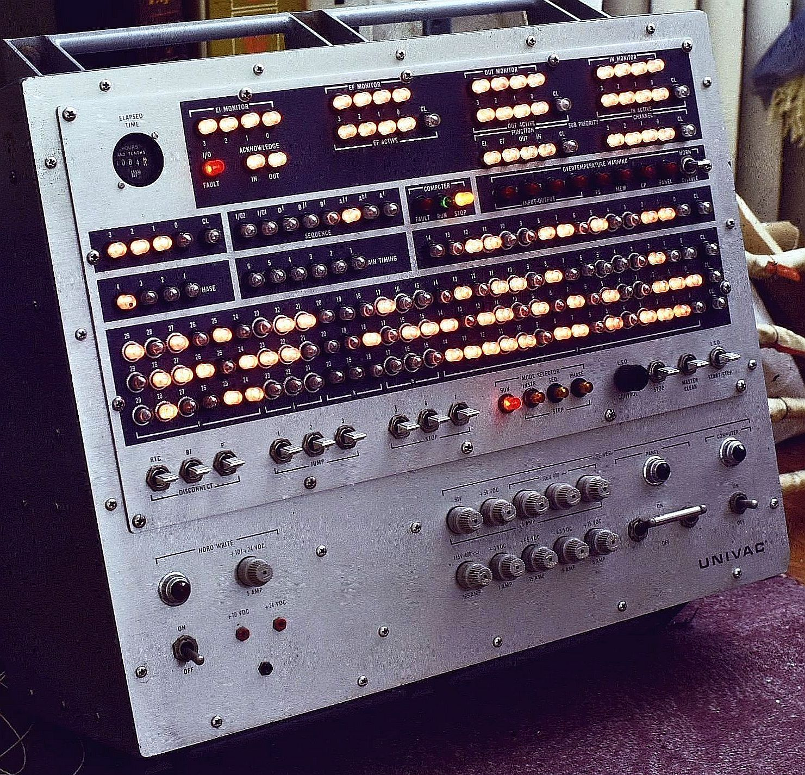
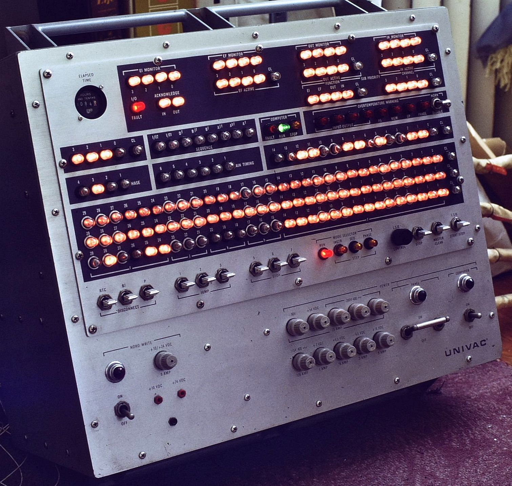

Back to 1830 Table of Contents.
My Involvement with the 1830
My association with the 1830 came about while an undergraduate student
in the Electrical Engineering department at Drexel University, Philadelphia,
Pennsylvania, USA, or shortly thereafter. The 1830 had been donated to the
university prior to its name change from Drexel Institute of Technology
in 1970. According to information on Todd Thomas's Web site (which I
was not aware of even though it originated from me!), the system was
actually operational and used by students sometime between 1970 and 1973.
That is also strange since those are the precise years when I attended Drexel
full time in the EE department and had been deeply involved in the
restoration of the Autonetics D17B Computer.
(See: The Autonetics D17B Minuteman I Missile
Guidance Computer.)
But once much more capable minicomputers became affordable -
or were donated to universities by
companies like Digital Equipment Corporation (remember DEC?),
there was the inevitable question of what to do with the 1830! The space
it occupied (spread across and under
multiple lab benches when I first came across it)
was by then no doubt considered more valuable than
then an obsolete computer in the minds of the bean counters
regardless of its possible historical
significance. I must have casually asked
about what was being done with it (foolish me!) and of course jumped at the
opportunity to acquire any real computer in the 1970s
and was probably somewhat of
a fool to accept their offer to give it to me free as long as I carted it away,
not realizing what I was undertaking. My parents were probably not thrilled
either. But the many hundreds of pounds of electronics boxes,
cables, and documentation somehow made it to my small row home in
Philadelphia via multiple trips in a Chevy sedan. The details are
not at all clear, nor where everything was stored there.
For a while it just sat and gathered dust but then in late 1978 I had the
irresistible urge to at least power up parts of the system to see what it
could do. The memory system was known to be defective, it probably had a
tag on it stating something to this effect as there is absolute positively
no chance that anyone at Drexel had made any attempt to apply power to
any of this! Whether the documentation stated
that the CPU and Console could be run stand-alone is not known, but that is
what I decided to do. Now this thing doesn't exactly plug into a wall
socket. There was something called the "Power Supply Unit" that may have
been useful but for some reason I didn't want to use that as it would
have probably taken a week just to locate the required cables, only to
find that it still didn't have a normal AC plug and/or only ate three-phase.
More than a half dozen DC voltages are required to
run the the CPU and Console and few if any of those were available in my
collection of junk parts.
Back in those days before on-line surplus places and eBay,
DC power supplies where not nearly as readily available as they are in 2025.
There was a place in Phila named Herbach and Rademan which has all sorts of
surplus electronics but I doubt they were considered for this undertaking. So
I decided to simply build up power supplies using basic parts of which I did
have a fair inventory from salvaging all sorts of consumer
electronics and such. These were probably all unregulated power
supplies with just a power transformer, rectifier, and massive
filter capacitor(s). I did have an oscilloscope so it would have been possible
to check ripple, but don't recall if that was ever done.
Somehow they did the job though.
The two photos below show the only documented result. Exactly what made
me decide to take color slides of the Console in operation is also fussy.
Probably there were a couple of shots remaining on a roll of film with travel
pictures as I am so far unable to locate any other shots of the 1830. As
noted below, these may be the only surviving color photos of the 1830
actually powered, and in the case of one of them, executing code of sorts. ;-)
Then it sat - for years except for when I moved to the suburbs from Phila.
At least professional movers dealt with that one. ;-)
Since it was basically just taking up space from then on, I listed it on
my classified page at RepairFAQ.org.
(With the rise of eBay, that page has been retired.) Here is
the description (typos and all):
Univac 1830 prototype. :) Airforce avionics computer, 8 boxes, each
at least a foot cube, 50 or more pounds each, really cool front panel
with more switches and lights anything you have likely seen lately.
Complete schematics and user manual. No power supply (expected 28
VAC, 400 Hz or something equally difficult to supply without buying a
special system and used a half dozen or more different DC voltages.)
Just kidding - sorry, it isn't for sale yet. This was one of the
first IC based computers ever built. Circa 1960. I actually had the
CPU and front panel working with a kludged together collection of
power supplies (it would run loops out of its internal registers).
The huge (physically, at least, it was the largest box) 32k, 30 bit
word core and plated wire memory never worked for me, however.
This states that it "isn't for sale yet", and there was no price. ;-)
But that is probably where Todd Thomas found it. And the rest, as they
say, is history. As I recall, Todd did not come and pick up the system,
so shipping was another real treat. Each component was packed in its own
padded cardboard box and a few were sent at a time. At least the
weight of the individual boxes came in under the limit for UPS. ;-)
Interestingly (to me at least), after that, except for a version of the
third photo, below which Todd sent to me to confirm that everything arrived
safely, I have had no further contact
with him to this day and wasn't even aware of his Website until
discovering it while researching info for this writeup in 2025. If I had
remained in contact, there is a lot more that I might have asked him to
document. Or perhaps, it was better to have lost contact.....
Back to 1830 Table of Contents.
Photographs
The only visual record I currently have of the Univac 1830 are a pair
of Kodachrome 35 mm slides taken in September 1978 of the operator's console
powered up and connected to the CPU. Versions of these are also on the
Wikipedia page, along with the photo of the eight
massive electronics boxes comprising the 1830. What is not shown are two
or three cartons of garden hose-diameter interconnecting cables and the
reams of documentation including logic diagrams, schematics, and programming
manuals. An archive of some of these may be found on Todd Thomas's Website,
link below. However, not surprisingly, the super large "pink sheet"
logic diagrams and schematics have not been scanned for obvious reasons.
Too bad, they are the good stuff.
The main core memory was known to be faulty when I acquired the 1830 in the
early 1970s and repairing it was beyond my level of determination.
But the console and CPU could be
powered stand-alone, which was accomplished using a half dozen or more
cobbled-together DC power supplies. Few if any were regulated!
It was then possible to run complex ;-) single instruction programs
like "Increment" from one CPU register operating on another one, entered
via the rows of neon lights which also served as push-button bit toggles.
That is probably what the running program is doing.
Those neon indicators/switches were interesting in themselves. As I recall,
they were powered by low voltage DC and each one had a miniaturized inverter
to generate the greater than 90 volts required for the NE2-type
neon lamps. Their state was directly controlled by the DTL logic
levels which switched the inverter on and off.
The first two images are macro photographs of those slides taken in 2025 using
a Nikkor DX Micro f/1:2.8 lens and home-built slide copy adapter. These
may be the only surviving color photographs of a Univac 1830 in operation, sort
of. ;-) Unfortunately, back
in the 1970s, documenting everything with photographs was not something
that was automatic and there were no smart phones in everyone's pockets.
The third one is of the eight electronics boxes that comprised the 1830
taken by Todd Thomas, to whom I eventually sold the Univac 1830.



Univac 1830 Operator's Console with Program Halted (left) and Program Running (center); Univac 1830 Electronic Boxes (right, from Wikipedia)
External Links